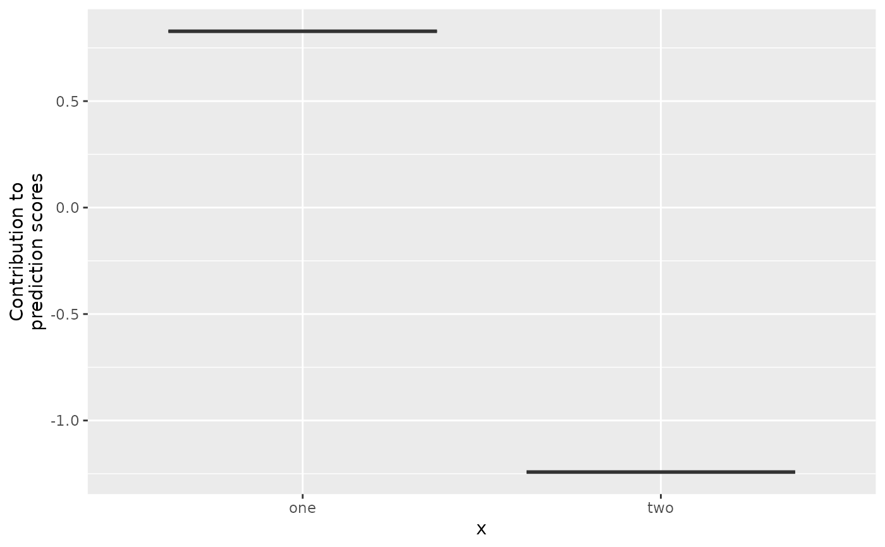

One-hot encoded base learner for a categorical feature
BaselearnerCategoricalRidge.RdThis base learner can be used to estimate effects of categorical features. The classes are included similar as in the linear model by using a one-hot encoded data matrix. Additionally, a Ridge penalty allows unbiased feature selection.
Format
S4 object.
Arguments
- data_source
CategoricalDataRaw
Data container of the raw categorical feature.- blearner_type
(
character(1))
Type of the base learner (if not specified,blearner_type = "ridge"is used). The unique id of the base learner is defined by appendingblearner_typeto the feature name:paste0(data_source$getIdentifier(), "_", blearner_type).- df
(
numeric(1))
Degrees of freedom of the base learner(s).
Usage
BaselearnerCategoricalRidge$new(data_source, list(df))
BaselearnerCategoricalRidge$new(data_source, blearner_type, list(df))Methods
$summarizeFactory():() -> ()$transfromData(newdata):list(InMemoryData) -> matrix()$getMeta():() -> list()
Inherited methods from Baselearner
$getData():() -> matrix()$getDF():() -> integer()$getPenalty():() -> numeric()$getPenaltyMat():() -> matrix()$getFeatureName():() -> character()$getModelName():() -> character()$getBaselearnerId():() -> character()
Examples
# Sample data:
x = sample(c("one","two"), 20, TRUE)
y = c(one = 0.8, two = -1.2)[x] + rnorm(20, 0, 0.2)
dat = data.frame(x, y)
# S4 API:
ds = CategoricalDataRaw$new(x, "cat")
bl = BaselearnerCategoricalRidge$new(ds, list(df = 1))
bl$getData()
#> [,1] [,2] [,3] [,4] [,5] [,6] [,7] [,8] [,9] [,10] [,11] [,12] [,13] [,14]
#> [1,] 1 0 0 0 1 0 1 0 1 1 0 0 1 0
#> [2,] 0 1 1 1 0 1 0 1 0 0 1 1 0 1
#> [,15] [,16] [,17] [,18] [,19] [,20]
#> [1,] 1 1 0 0 0 1
#> [2,] 0 0 1 1 1 0
bl$summarizeFactory()
#> Categorical base learner of category cat
bl$getData()
#> [,1] [,2] [,3] [,4] [,5] [,6] [,7] [,8] [,9] [,10] [,11] [,12] [,13] [,14]
#> [1,] 1 0 0 0 1 0 1 0 1 1 0 0 1 0
#> [2,] 0 1 1 1 0 1 0 1 0 0 1 1 0 1
#> [,15] [,16] [,17] [,18] [,19] [,20]
#> [1,] 1 1 0 0 0 1
#> [2,] 0 0 1 1 1 0
bl$summarizeFactory()
#> Categorical base learner of category cat
bl$transformData(list(ds))
#> $design
#> 20 x 2 sparse Matrix of class "dgCMatrix"
#>
#> [1,] 1 .
#> [2,] . 1
#> [3,] . 1
#> [4,] . 1
#> [5,] 1 .
#> [6,] . 1
#> [7,] 1 .
#> [8,] . 1
#> [9,] 1 .
#> [10,] 1 .
#> [11,] . 1
#> [12,] . 1
#> [13,] 1 .
#> [14,] . 1
#> [15,] 1 .
#> [16,] 1 .
#> [17,] . 1
#> [18,] . 1
#> [19,] . 1
#> [20,] 1 .
#>
bl$getBaselearnerId()
#> [1] "cat_cat"
# R6 API:
cboost = Compboost$new(dat, "y")
cboost$addBaselearner("x", "binary", BaselearnerCategoricalRidge)
cboost$train(100, 0)
#> Train 100 iterations in 0 Seconds.
#> Final risk based on the train set: 0.015
#>
table(cboost$getSelectedBaselearner())
#>
#> x_binary
#> 100
plotPEUni(cboost, "x", individual = FALSE)
